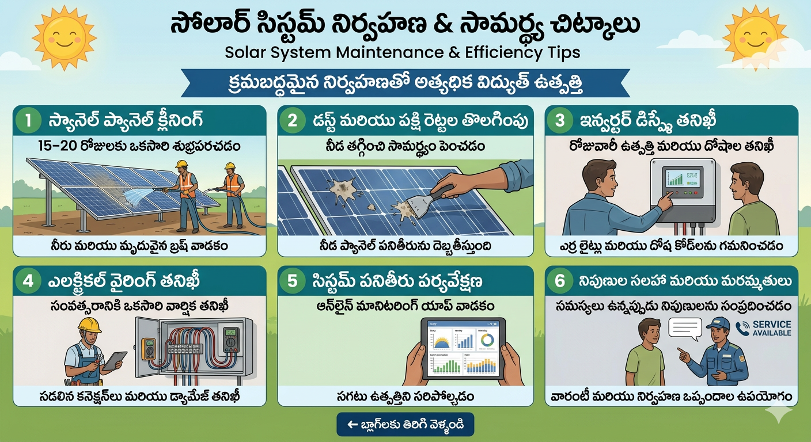

Solar System Maintenance Guide
Solar power systems generally low maintenance systems. కానీ regular inspection
చేస్తే system efficiency ఎక్కువగా ఉంటుంది.
Maintenance Tips

- Solar panels 15–20 days కి ఒకసారి clean చేయాలి.
- Dust, bird droppings remove చేయాలి.
- Inverter display check చేయాలి.
- Electrical wiring inspection yearly చేయాలి.
⬅ Back to Blogs